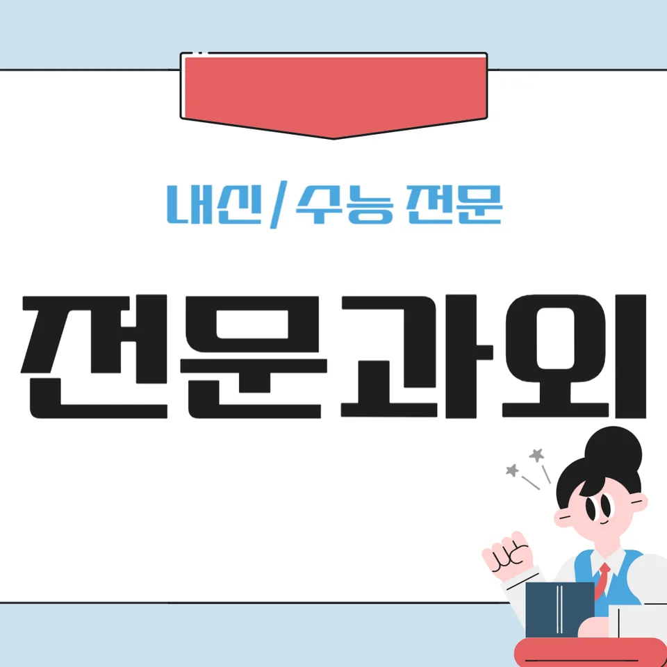

PageType : DONG
URL : /경기도과외/안양시과외/만안구과외/석수동과외/
지역 학습환경과 학생들의 변화
석수동과외를 시작한 학생들은 대체로 “집에서 공부를 시작하는 시간”이 먼저 달라집니다. 학원이나 학원형 수업이 익숙해도, 막상 자기 연필을 들고 문제를 푸는 순간엔 속도가 흔들리는 경우가 많습니다. 그래서 석수동과외에서는 학교 숙제 확인부터 풀이 흐름까지 학생 눈높이에서 정리해 주는 방식이 자리 잡습니다. 결과적으로 수업 시간에 집중이 늘고, 집에서도 같은 유형의 문제를 다시 풀어보려는 행동이 생깁니다.
지역 학습환경은 조용한 편이라도 개인별 편차가 큽니다. 어떤 학생은 늦은 귀가 이후에도 집중을 이어가지만, 다른 학생은 스마트폰 알림과 함께 리듬이 무너집니다. 석수동과외는 이런 차이를 한 번에 바꾸기보다, 학생의 일상 흐름에 맞춰 “짧게 시작해 오래 유지하기”로 설계합니다. 예를 들어 20~25분 단위로 문제-오답-다시 풀기까지 이어지면, 다음 날 준비도 자연스럽게 가벼워집니다.
학생이 달라지는 지점은 성적만이 아닙니다. 예전에는 모르는 문제가 나오면 곧바로 포기하던 모습이, 석수동과외를 통해 “왜 틀렸는지”를 한 줄로 설명하려는 습관으로 바뀌는 경우가 많습니다. 그 과정이 쌓이면 시험 전날의 불안이 줄고, 학습 태도가 안정적으로 굳어집니다.
학부모가 많이 고민하는 부분
학부모는 대체로 “어느 과목부터 잡아야 하는지”보다 “어떻게 지속할지”를 더 걱정합니다. 석수동과외 상담에서도 자주 나오는 말이 있습니다. 시간은 확보했는데 공부가 매일 흔들린다는 점, 그리고 성적이 오르지 않는 이유가 공부량인지 이해 부족인지 분간이 어렵다는 점입니다. 그래서 지도 방식은 단순한 진도 조절이 아니라, 학습 습관을 관찰한 뒤 원인을 나누는 데 집중됩니다.
특히 초반에는 내신과 연계되는 기초 개념이 흔들리는 학생이 많아, “문제 풀이만 늘리면 해결되나요?”라는 질문이 이어집니다. 석수동과외에서는 단원별로 이해가 무너지는 고리를 찾아, 짧은 개념 확인-대표문제-오답 정리의 순서를 고정합니다. 이런 흐름이 잡히면 학부모가 매일 점검하지 않아도 학생이 스스로 체크리스트를 따르게 됩니다.
또 다른 고민은 시험 기간이 다가올 때 집중력이 떨어지는 패턴입니다. 석수동과외 수업에서는 시험 전 2~3주부터 계획을 미리 조정해, 막판에 몰아치는 방식이 아니라 “매일 누적”되는 구조를 만듭니다. 결국 학부모는 결과를 기다리는 시간이 줄고, 과정에서 변화를 확인하게 됩니다.
학년이 올라갈수록 달라지는 공부
중학생이나 고등학생으로 올라가면서 공부는 점차 ‘양’에서 ‘구조’로 바뀝니다. 석수동과외를 진행할 때도 학년 변화에 맞춰 공부 방식이 달라집니다. 예를 들어 중반 이후엔 단원 간 연결이 늘어 같은 유형 문제라도 조건을 다르게 해석해야 합니다. 이때 학생의 오답이 “실수”인지 “개념 공백”인지 구분되지 않으면 학습 태도가 쉽게 흔들립니다.
상급 학년일수록 시간관리의 기준이 더 촘촘해집니다. 수업 시간에 이해를 했다 하더라도 집에서 다시 펼칠 때, 어디서 막히는지 기록하지 않으면 다음 시험에서도 같은 구간이 반복됩니다. 그래서 석수동과외는 공부 계획을 단순 캘린더로 두지 않고, 하루 학습 목표를 ‘문항 수’보다 ‘달성 가능한 체크 항목’으로 바꾸는 편입니다.
학생들은 학년이 올라갈수록 스스로 공부하는 힘이 필요해집니다. 그 힘은 자기주도학습에서 나옵니다. 다만 갑자기 완전한 자율을 기대하기보다, 처음엔 작은 선택권(문제 유형 우선순위, 오답 재풀이 순서)을 주고 점진적으로 책임감을 키웁니다.
학교생활과 내신 준비
내신 준비는 수업 내용 이해에서 출발하지만, 실제로는 학교생활의 리듬에 좌우됩니다. 석수동과외 학생들 중에는 수업 중 필기를 열심히 하지만, 집에서 정리할 때 시간이 부족해 흐름이 끊기는 경우가 있습니다. 이때 수업 속도가 아니라 정리 습관이 점수를 좌우합니다. 그래서 내신 준비 단계에서는 “기록-복습-확인” 루틴을 짧게 고정합니다.
학교 시험이 다가오면 학생들은 문제 수를 늘리려 하지만, 오히려 시험 스타일에 맞춘 정답률 관리가 더 중요해집니다. 석수동과외에서는 학교에서 다뤄온 서술형, 단원 평가 경향을 반영해 연습을 구성합니다. 학생은 시험을 앞두고 막연히 불안을 키우기보다, 준비한 범위가 무엇인지 분명해지면서 학습이 안정됩니다.
또한 내신은 과목 간 균형도 중요합니다. 어떤 학생은 국어에 시간을 쏟고 수학에서 실수가 늘어나며, 반대로 수학만 올리다가 다른 과목에서 감점이 발생합니다. 석수동과외는 학생의 점수 패턴을 보고 과목별 가중치를 조정해, 학습이 한쪽으로 쏠리지 않게 만듭니다.
자기주도학습이 중요한 이유
자기주도학습은 단순히 혼자 하는 공부가 아니라, ‘다음 행동을 정하는 힘’에 가깝습니다. 석수동과외 수업이 끝난 뒤에도 학생이 교재를 넘기지 못하고 멈추는 순간이 있는데, 그때 필요한 것은 의지보다 절차입니다. 그래서 학생이 스스로 할 수 있도록 공부 순서를 명확히 제공합니다. 예를 들면 오늘의 목표-진단 문제-개념 보충-오답 재풀이-내일 연결 단계로 이어지게 하는 방식입니다.
이 과정에서 공부 습관이 성적에 직접 연결됩니다. 시간이 남을 때 더 하는 학생과, 시간이 없어도 해야 할 것을 끝내는 학생은 시험 직전의 준비 상태가 다릅니다. 석수동과외에서는 “주말에 몰아하기” 대신 “평일의 작은 완성”을 훈련해 자기주도학습의 품질을 높입니다.
학생이 성장할수록 질문의 종류도 달라집니다. 처음엔 “이거 어떻게 풀어요?”였다가, 점차 “제가 어디서 틀렸는지 확인해 주세요”로 바뀝니다. 이런 변화가 나타나면 학습 태도는 이미 바뀐 것입니다.
공부 습관이 성적에 미치는 영향
공부 습관은 성적의 배경입니다. 같은 실력을 가진 학생이라도 문제를 대하는 방식이 다르면 결과가 갈립니다. 석수동과외에서는 오답을 버리는 태도, 풀이 과정을 건너뛰는 습관, 시험 직전에만 보는 정리 노트 같은 문제를 먼저 다룹니다. 학생은 “틀린 문제를 다시 푸는 시간”이 생기면서 점수 상승의 속도를 체감합니다.
또한 시간관리 습관이 시험 성적을 바꿉니다. 계산 실수가 반복되는 학생은 보통 급하게 마무리하는 경향이 있습니다. 여기서 필요한 건 더 많은 연습보다 속도 조절과 검산 루틴입니다. 석수동과외는 짧은 검토 시간을 매일 넣어, 습관이 굳도록 돕습니다.
시험기간에는 특히 집중력이 흔들리기 때문에, 평소 습관이 ‘버팀목’ 역할을 합니다. 평일에 이미 틀린 문제를 정리해 둔 학생은 시험이 다가와도 불안이 줄어듭니다. 결국 공부 습관이 시험 문제 대응력으로 이어집니다.
체크해야 할 학습 포인트
- 공부 시작 시간을 고정하고, 첫 10분에 집중을 세팅했는지
- 오답을 “왜 틀렸는지 한 줄”로 남기고 재풀이했는지
- 내신 대비에서 단원별 약점을 시험 유형과 연결해 점검했는지
- 시험 전 주간 계획이 실제 일정(등교/학원/휴식)에 맞춰 조정됐는지
지역 특성에 맞춘 학습 설계
석수동과외는 지역에서 생활하는 리듬을 고려해 학습 설계를 합니다. 통학 거리나 저녁 시간대의 생활 패턴이 학생마다 다르기 때문에, 같은 “하루 2시간”이라도 실제 집중도는 달라집니다. 그래서 수업에서는 학생의 컨디션이 좋은 시간대를 먼저 찾아 그 시간에 핵심 과목을 배치합니다. 이렇게 해야 공부 계획이 현실이 되고, 학습이 끊기지 않습니다.
수학처럼 단계가 쌓이는 과목은 ‘오늘의 이해’가 ‘다음 단원 점수’가 되기도 합니다. 반대로 암기형 과목은 누적이 성적을 결정합니다. 석수동과외에서는 과목 특성을 분리해서 공부 계획을 조정하고, 학생이 과목 선택에서 덜 흔들리도록 우선순위를 만들어 줍니다.
또한 학교생활에서 중요한 날(발표, 수행평가, 서술형 대비)에는 사전 준비 루틴이 필요합니다. 학생은 준비가 되어 있을 때 훨씬 덜 당황하고, 시험 전 집중도도 자연스럽게 올라갑니다. 이런 점에서 석수동과외는 단기간 점수보다 학습 태도 개선을 목표로 움직입니다.
자주 묻는 질문
석수동과외는 어떤 학생에게 특히 도움이 되나요?
기초 개념은 있는데 시험에서 흔들리는 학생, 오답 정리가 안 되어 반복 실수가 생기는 학생, 학습 습관이 들쑥날쑥한 학생에게 효과가 큽니다.
내신 준비는 어떻게 진행되나요?
학교 수업 흐름과 시험 범위를 기준으로 단원별 약점을 잡고, 문제 유형을 시험 스타일에 맞춰 연습한 뒤 오답 재풀이로 완성도를 올립니다.
자기주도학습을 어떻게 훈련하나요?
학생이 스스로 다음 행동을 고를 수 있게 목표-진단-개념 보충-오답 정리-다음 단계로 이어지는 절차를 고정하고, 점진적으로 선택권을 늘립니다.
시험기간에 집중력이 떨어지는 학생도 개선되나요?
가능합니다. 시험 전 주간 계획을 미리 조정하고, 매일 해야 할 체크 항목을 작게 쪼개서 누적되게 만들면 불안이 줄어듭니다.
공부 계획은 얼마나 자주 수정하나요?
보통 과목별 점검 결과와 수행평가/학사 일정에 따라 주 단위로 조정합니다. 석수동과외에서는 계획이 ‘지킬 수 있는 형태’인지도 함께 봅니다.
